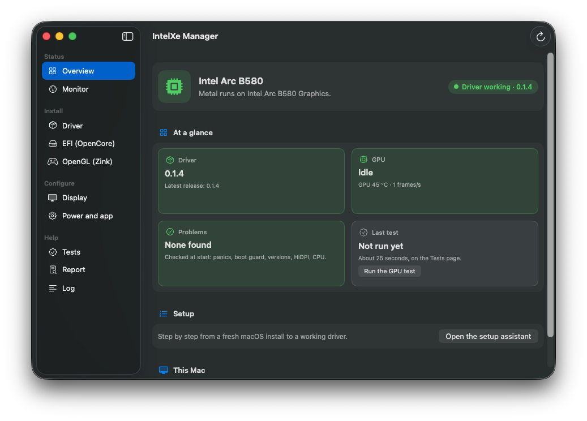

InstallationKurulum
From macOSmacOS'tan
Stages 2 to 4 from the macOS you installed in stage 1, on the PC itself: with the IntelXe Manager app, or with install.sh and efi.sh from the package in Terminal. Both do the same: the app is a front end to the two scripts.1. aşamada kurduğunuz macOS'tan, bilgisayarın kendisinde 2.-4. aşamalar: IntelXe Manager uygulamasıyla ya da Terminal'de paketteki install.sh ve efi.sh ile. İkisi aynı işi yapar: uygulama bu iki betiğin önyüzü.
3.1 With the IntelXe Manager app3.1 IntelXe Manager uygulamasıyla

The app does stages 3 and 4 on the PC with buttons and shows what each step will change before it asks for your password; install.sh and efi.sh from the package do the work, so it is the same as the Terminal steps in 3.2.
- Download
IntelXe-Manager-0.1.5.zipin Terminal, which leaves no "downloaded from the internet" mark, and unpack it into your Applications folder:cd ~/Downloads curl -LO https://github.com/yusufklncc/intel-gpu-macos-driver/releases/download/v0.1.5/IntelXe-Manager-0.1.5.zip mkdir -p ~/Applications && ditto -x -k IntelXe-Manager-0.1.5.zip ~/Applications open ~/Applications/"IntelXe Manager.app"The app is signed ad hoc, not by an Apple developer ID. Downloaded with a browser, macOS refuses to open it; then run
xattr -dr com.apple.quarantine ~/Applications/"IntelXe Manager.app", or open it once and allow it under System Settings > Privacy & Security (Open Anyway).On its first start the app opens its setup assistant, which goes through the steps below one page at a time, picks up where it stopped when you open the app again after a restart, and ends with a GPU test and the optional extras (Safari on the GPU, Zink, HiDPI, the menu bar item). Its first step can prepare Safari's setting in the same change (Also prepare Safari on the GPU). The steps by hand, on the app's pages:
- Overview shows what the driver needs (macOS, SIP, the AMFI boot-arg, the card) and what is installed.
- Driver: Download v0.1.5 fetches the package for your macOS, checks that the release's checksum list is signed with the project's key and compares the package with it. The EFI page takes its files from this package too.
- Stage 2 not done yet? The install needs it (it refuses to run without relaxed SIP and the AMFI boot-arg): on EFI (OpenCore) press Change these settings under "Settings (stage 2)" (when OpenCore did not record the EFI it booted from, choose the partition first, or Use an EFI folder…), reboot, and open the app again.
- Driver: Install this package (the same as
sudo ./install.sh --apply). Do not reboot yet. - EFI (OpenCore): Make these changes under "IntelXe.kext and SSDT-ARCOFF (stage 4)"; stage 4 below explains what it changes. Every EFI change shows its list of changes and asks first. Then reboot and check.
The app also repairs, undoes and uninstalls the driver, installs the optional zink package, installs the system-volume copy for Safari (the Driver page's Safari and WebKit, with SecureBootModel on the EFI page), turns the HiDPI modes on (Display page), tests the GPU, makes a diagnostics report, and later installs a new release over the old one. It contacts only GitHub and sends no data. The Driver page was used on the test machine; the EFI page was used there on the EFI of its SSD; Undo on a real EFI and a whole install from a fresh macOS were not repeated with the app. Every page: Apps.
Uygulama 3. ve 4. aşamaları bilgisayarda düğmelerle yapar ve her adımın neyi değiştireceğini parolanızı sormadan önce gösterir. İşi paketteki install.sh ve efi.sh yapıyor; yani 3.2'deki Terminal adımlarıyla aynı şey.
IntelXe-Manager-0.1.5.zip'i Terminal'den indirin ("internetten indirildi" işareti bırakmaz) ve Uygulamalar klasörünüze açın:cd ~/Downloads curl -LO https://github.com/yusufklncc/intel-gpu-macos-driver/releases/download/v0.1.5/IntelXe-Manager-0.1.5.zip mkdir -p ~/Applications && ditto -x -k IntelXe-Manager-0.1.5.zip ~/Applications open ~/Applications/"IntelXe Manager.app"Uygulama bir Apple geliştirici kimliğiyle değil, ad hoc imzalı. Tarayıcıyla indirdiyseniz macOS açmayı reddeder; o zaman
xattr -dr com.apple.quarantine ~/Applications/"IntelXe Manager.app"çalıştırın ya da bir kez açmayı deneyip Sistem Ayarları > Gizlilik ve Güvenlik'te izin verin (Yine de Aç).Uygulama ilk açılışta kurulum yardımcısını açar: aşağıdaki adımları sayfa sayfa yürütür, yeniden başlattıktan sonra uygulamayı açtığınızda kaldığı yerden devam eder ve bir GPU testi ile isteğe bağlı eklerle (GPU'da Safari, Zink, HiDPI, menü çubuğu öğesi) biter. İlk adımı Safari'nin ayarını da aynı değişiklikte yapabilir (Safari'yi de GPU için hazırla). Adımlar elle, uygulamanın sayfalarında:
- Genel bakış sürücünün neye ihtiyaç duyduğunu (macOS, SIP, AMFI boot-arg'ı, kart) ve neyin kurulu olduğunu gösterir.
- Sürücü: v0.1.5 sürümünü indir macOS'unuza uygun paketi indirir, sürümün sağlama listesinin projenin anahtarıyla imzalı olduğunu denetler ve paketi listeyle karşılaştırır. EFI sayfası da dosyalarını bu paketten alır.
- 2. aşamayı henüz yapmadınız mı? Kurulum ona ihtiyaç duyuyor (SIP gevşetilmeden ve AMFI boot-arg'ı olmadan çalışmayı reddediyor): EFI (OpenCore) sayfasında "Ayarlar (2. aşama)" altında Bu ayarları değiştir'e basın (OpenCore açıldığı EFI'yi kaydetmediyse önce bölümü seçin ya da Bir EFI klasörü kullan…), yeniden başlatın ve uygulamayı yeniden açın.
- Sürücü: Bu paketi kur (
sudo ./install.sh --applyile aynı). Henüz yeniden başlatmayın. - EFI (OpenCore): "IntelXe.kext ve SSDT-ARCOFF (4. aşama)" altında Bu değişiklikleri yap; neyi değiştirdiği aşağıda 4. aşamada anlatılıyor. Her EFI değişikliği önce değişiklik listesini gösterip sorar. Sonra yeniden başlatın ve kontrol edin.
Uygulama ayrıca sürücüyü onarır, geri alır, kaldırır, isteğe bağlı zink paketini kurar, Safari için sistem diski kopyasını kurar (Sürücü sayfasında Safari ve WebKit, SecureBootModel EFI sayfasında), HiDPI modlarını açar (Ekran sayfası), GPU'yu test eder, tanı raporu hazırlar ve sonraki sürümleri eskisinin üzerine kurar. Yalnızca GitHub'a bağlanır, veri göndermez. Sürücü sayfası test makinesinde kullanıldı; EFI sayfası da orada SSD'nin EFI'sinde kullanıldı. Gerçek bir EFI'de Undo ve temiz bir macOS'tan baştan sona uygulamayla kurulum henüz denenmedi. Arayüz sistem diline göre İngilizce ya da Türkçe; buradaki adlar Türkçe arayüzdeki adlar. Bütün sayfalar: Uygulamalar.
3.2 In Terminal3.2 Terminal'de
- Download and unpack the package in Terminal. Files fetched with
curlcarry no "downloaded from the internet" mark, so Gatekeeper leaves them alone:cd ~/Downloads curl -LO https://github.com/yusufklncc/intel-gpu-macos-driver/releases/download/v0.1.5/intel-gpu-macos-driver-0.1.5-tahoe.zip ditto -x -k intel-gpu-macos-driver-0.1.5-tahoe.zip . cd intel-gpu-macos-driver-0.1.5-tahoeDownloaded with a browser instead? Unpack it with a double click, open Terminal in the folder and run
xattr -dr com.apple.quarantine .first. On macOS 15, the package is the -sequoia.zip. - Stage 2 not done yet?
./efi.sh --settings-planshows it,sudo ./efi.sh --settings-applymakes it in the EFI OpenCore booted from; then reboot and come back here. - Check, then install:
./install.sh # checks only: macOS, SIP, AMFI, the card, checksums, signatures sudo ./install.sh --applyAt this stage the check warns that
IntelXe.kextis not loaded; it comes in stage 4.--applybacks up what it replaces to/Library/Application Support/intel-gpu-macos-driver/backup-<date>/, copies the kexts and the Metal driver into/Library, installs the boot guard's LaunchDaemon (see the boot guard), and rebuilds the Auxiliary Kernel Collection. - Do not reboot yet: do stage 4 first.
Repair, undo and uninstall, and ./install.sh --status: Other install.sh commands.
- Paketi Terminal'den indirip açın.
curlile indirilen dosyalar "internetten indirildi" işareti taşımadığı için Gatekeeper onlara karışmaz:cd ~/Downloads curl -LO https://github.com/yusufklncc/intel-gpu-macos-driver/releases/download/v0.1.5/intel-gpu-macos-driver-0.1.5-tahoe.zip ditto -x -k intel-gpu-macos-driver-0.1.5-tahoe.zip . cd intel-gpu-macos-driver-0.1.5-tahoeTarayıcıyla indirdiyseniz çift tıklayıp açın, klasörde Terminal açın ve önce
xattr -dr com.apple.quarantine .çalıştırın. macOS 15'te paket -sequoia.zip. - 2. aşamayı henüz yapmadınız mı?
./efi.sh --settings-planonu gösterir,sudo ./efi.sh --settings-applyOpenCore'un açıldığı EFI'de yapar; sonra yeniden başlatıp buraya dönün. - Önce kontrol edin, sonra kurun:
./install.sh # yalnızca kontrol: macOS, SIP, AMFI, kart, sağlama toplamları, imzalar sudo ./install.sh --applyBu aşamada kontrol,
IntelXe.kext'in yüklü olmadığını söyler; o 4. aşamada geliyor.--apply, değiştirdiği her şeyi/Library/Application Support/intel-gpu-macos-driver/backup-<tarih>/altına yedekler, kext'leri ve Metal sürücüsünü/Library'ye kopyalar, açılış korumasının LaunchDaemon'ını kurar (bkz. açılış koruması) ve Yardımcı Kernel Koleksiyonu'nu yeniden oluşturur. - Henüz yeniden başlatmayın: önce 4. aşamayı yapın.
Onarma, geri alma, kaldırma ve ./install.sh --status: install.sh'nin diğer komutları.
Stage 4 on the PC: efi.sh or the app's EFI pageBilgisayarda 4. aşama: efi.sh ya da uygulamanın EFI sayfası
efi.sh in the macOS package does stage 4 (and stage 2's settings) for you: it finds the EFI OpenCore booted from, backs up the whole EFI folder, copies the files and enables their config.plist entries. It reads your card's ACPI path from the I/O Registry; when it is not the shipped table's, it writes your path into a copy of SSDT-ARCOFF.aml and adds that (the plan says "adapted to this card's port"), so there is no table to edit or compile. On a 12th-14th gen hybrid Intel CPU it adds HybridPM.kext as well (HybridPM). The IntelXe Manager app has the same on its EFI page.
macOS paketindeki efi.sh 4. aşamayı (ve 2. aşamanın ayarlarını) sizin yerinize yapar: OpenCore'un açıldığı EFI'yi bulur, EFI klasörünün tamamını yedekler, dosyaları kopyalar, config.plist kayıtlarını açar. Kartınızın ACPI yolunu I/O Registry'den okur; yol paketteki tablonunkinden farklıysa SSDT-ARCOFF.aml'ın bir kopyasına sizin yolunuzu yazıp onu ekler (plan bunu "adapted to this card's port" diye belirtir); düzenlenecek ya da derlenecek bir tablo kalmaz. 12.-14. nesil hibrit bir Intel işlemcide HybridPM.kext'i de ekler (HybridPM). IntelXe Manager uygulamasının EFI sayfası da aynısını yapar.
./efi.sh --plan # shows the changes
sudo ./efi.sh --apply # makes them
sudo ./efi.sh --undo # takes them back
./efi.sh # every option; --settings-plan / --settings-apply do stage 2./efi.sh --plan # değişiklikleri gösterir
sudo ./efi.sh --apply # yapar
sudo ./efi.sh --undo # geri alır
./efi.sh # bütün seçenekler; --settings-plan / --settings-apply 2. aşamayı yaparWhich EFI: OpenCore names the partition it booted from in NVRAM only when Misc > Security > ExposeSensitiveData includes 1. Without it the app lists the EFI partitions to choose from, or works on a folder you pick (Use an EFI folder…), and the stage-4 change adds 1 so that the next boots record it. To make the same entries yourself: The EFI by hand.
Hangi EFI: OpenCore açıldığı bölümü NVRAM'e yalnızca Misc > Security > ExposeSensitiveData 1'i içeriyorsa yazar. Yoksa uygulama seçmeniz için EFI bölümlerini listeler ya da seçtiğiniz bir klasörde çalışır (Bir EFI klasörü kullan…); 4. aşama değişikliği de 1'i ekler, böylece sonraki açılışlar bunu kaydeder. Aynı kayıtları kendiniz yapmak için: EFI'yi elle düzenlemek.
Restart and checkYeniden başlatın ve kontrol edin
Reboot. The desktop should now be accelerated: transparency and blur, smooth window dragging, and About This Mac names the card (the Arc B580 with 12 GB). In Terminal, kmutil showloaded | grep -i intelxe lists IntelXe and IntelXeFB, and sysctl debug.nmxaccelfb prints 1.
The first login after an install is a few seconds less smooth: macOS compiles the desktop's shaders once and keeps them. Then open IntelXe Manager: its Overview should say the driver is working. Not accelerated? The desktop is not accelerated. No picture, or a reboot loop? Black screen or a reboot loop.
Yeniden başlatın. Masaüstü artık hızlandırmalı olmalı: saydamlık ve bulanıklık, akıcı pencere sürükleme, Bu Mac Hakkında'da kartın adı görünür (12 GB'lık Arc B580). Terminal'de kmutil showloaded | grep -i intelxe IntelXe ve IntelXeFB'yi listeler, sysctl debug.nmxaccelfb de 1 yazar.
Kurulumdan sonraki ilk giriş birkaç saniye daha az akıcıdır: macOS masaüstünün shader'larını bir kez derleyip saklıyor. Sonra IntelXe Manager'ı açın: Genel bakış sürücünün çalıştığını söylemeli. Hızlandırma yok mu? Masaüstü hızlandırılmamış. Görüntü yok ya da sürekli yeniden mi başlıyor? Siyah ekran ya da sürekli yeniden başlama.
What the macOS package holdsmacOS paketinin içindekiler
| PathYol | Goes toNereye gidiyor |
|---|---|
EFI/OC/Kexts/IntelXe.kext | the EFI, Kernel > Add (stage 4); the same file as in the -efi.zipEFI, Kernel > Add (4. aşama); -efi.zip'tekiyle aynı dosya |
EFI/OC/ACPI/SSDT-ARCOFF.aml, .dsl | the EFI, ACPI > Add, after checking the path (stage 4)EFI, ACPI > Add, yolu kontrol ettikten sonra (4. aşama) |
EFI/OC/Kexts/HybridPM.kext | optional: the EFI, Kernel > Add below Lilu, for 12th-14th gen hybrid Intel CPUsisteğe bağlı: EFI, Kernel > Add'de Lilu'nun altına; 12.-14. nesil hibrit Intel işlemciler için |
Library/Extensions/IntelXeFB.kext, NMXAccel.kext, NMXAGDC.kext | /Library/Extensions (display, accelerator), via install.sh/Library/Extensions (ekran, hızlandırıcı), install.sh ile |
Library/GPUBundles/NVMTLDriverLib.bundle, nvmtl/, nvmtl-allow.txt | /Library/GPUBundles (Metal driver, Mesa, codecs), via install.sh/Library/GPUBundles (Metal sürücüsü, Mesa, codec'ler), install.sh ile |
(made by install.sh)(install.sh oluşturur) | /Library/LaunchDaemons/io.github.yusufklncc.intelxe.guard.plist: clears the boot guard once a boot has run for a minute/Library/LaunchDaemons/io.github.yusufklncc.intelxe.guard.plist: bir açılış bir dakika çalışınca açılış korumasını temizler |
system-volume/ | optional: the copy of the Metal driver on the system volume (Safari on the GPU)isteğe bağlı: Metal sürücüsünün sistem diskindeki kopyası (GPU'da Safari) |
efi.sh | optional, on macOS: stages 2 and 4 in the EFI OpenCore booted from, with a backup and an undoisteğe bağlı, macOS'ta: OpenCore'un açıldığı EFI'de 2. ve 4. aşamalar, yedek ve geri alma ile |
hidpi.sh | optional: HiDPI modes for the monitor (display scaling), on and offisteğe bağlı: monitör için HiDPI modları (ekran ölçeklendirme), açma ve kapama |
hpmstat | optional: per-core clocks and package power, with HybridPM loadedisteğe bağlı: HybridPM yüklüyken çekirdek saatleri ve paket gücü |
SHA256SUMS, sigcheck | the checks install.sh runsinstall.sh'nin yaptığı kontroller |
SOURCES.md, LICENSES/ | which source and script built each binary; the licence texts (Credits and licences)hangi kaynağın ve betiğin hangi dosyayı ürettiği; lisans metinleri (Emeği geçenler ve lisanslar) |